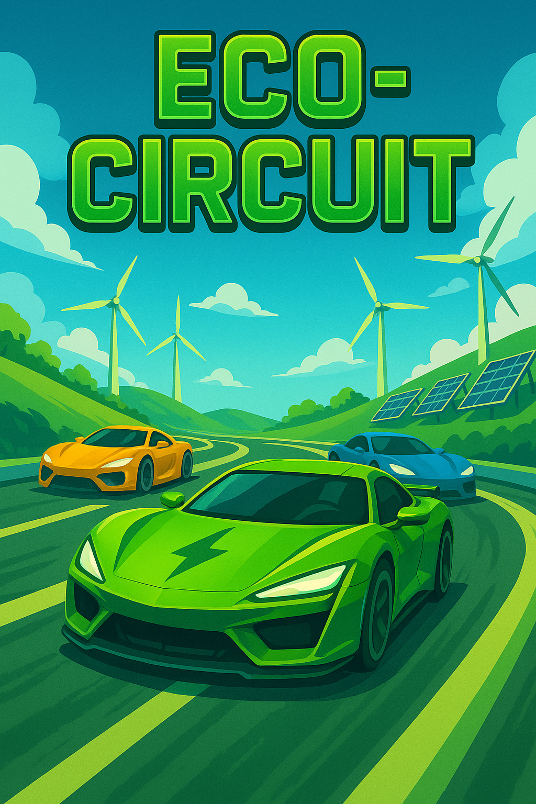

Eco Circuit
About the Game
Eco Circuit is a futuristic racing game where players must collect sustainable energy orbs to fuel their vehicles and avoid polluting hazards. Your racing success helps bring nature back into the city streets. Built for the Green Game Jam to promote clean transportation and urban eco-restoration.
Eco-Friendly Features
- Incentivizes clean energy and punishes overuse of fossil-fuel pickups.
- Unlocks green zones and vertical gardens as you progress through city levels.
- Made with minimal textures and shaders to lower GPU strain and energy use.
Quick Info
- Genre: Racing / Eco-Arcade
- Built With: Unreal Engine
- Platform: PC & Mobile
- Team: Green Speed Studio